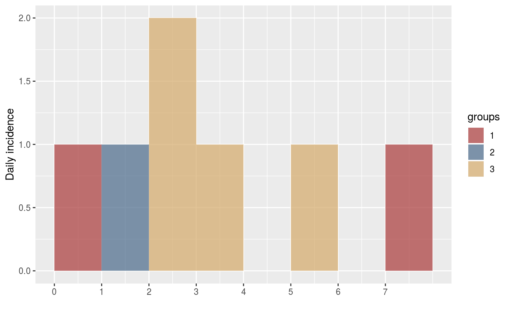
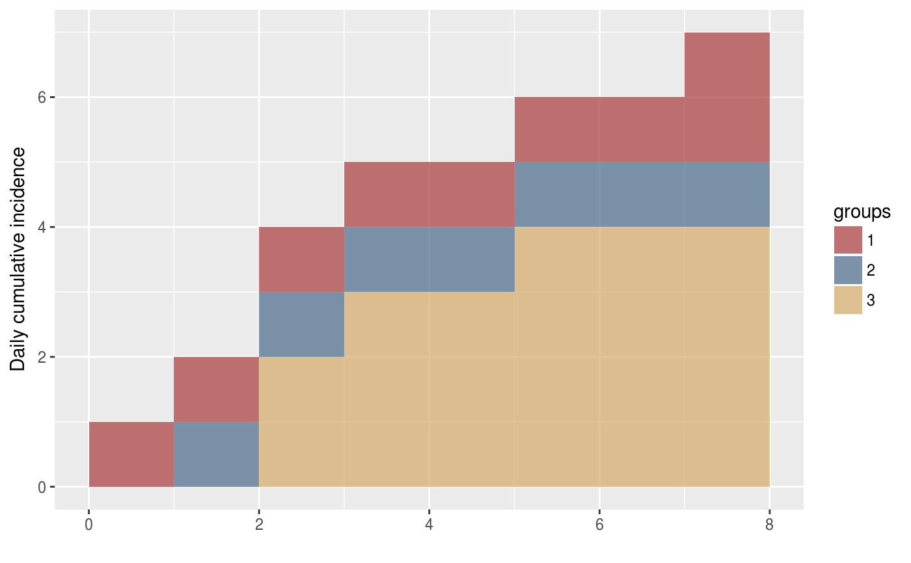

cumulate is an S3 generic to compute cumulative numbers, with methods
for different types of objects:
cumulate(x) # S3 method for default cumulate(x) # S3 method for incidence cumulate(x)
| x | An incidence object. |
|---|
default method is a wrapper for cumsum
incidence objects: computes cumulative incidence over time
projections objects: same, for projections objects,
implemented in the similarly named package; see ?cumulate.projections
for more information, after loading the package
The incidence() function to generate the 'incidence'
objects.
dat <- as.integer(c(0,1,2,2,3,5,7)) group <- factor(c(1, 2, 3, 3, 3, 3, 1)) i <- incidence(dat, groups = group) i#> <incidence object> #> [7 cases from days 0 to 7] #> [3 groups: 1, 2, 3] #> #> $counts: matrix with 8 rows and 3 columns #> $n: 7 cases in total #> $dates: 8 dates marking the left-side of bins #> $interval: 1 day #> $timespan: 8 days #> $cumulative: FALSE #>plot(i)i_cum <- cumulate(i) i_cum#> <incidence object> #> [7 cases from days 0 to 7] #> [3 groups: 1, 2, 3] #> #> $counts: matrix with 8 rows and 3 columns #> $n: 7 cases in total #> $dates: 8 dates marking the left-side of bins #> $interval: 1 day #> $timespan: 8 days #> $cumulative: TRUE #>plot(i_cum)